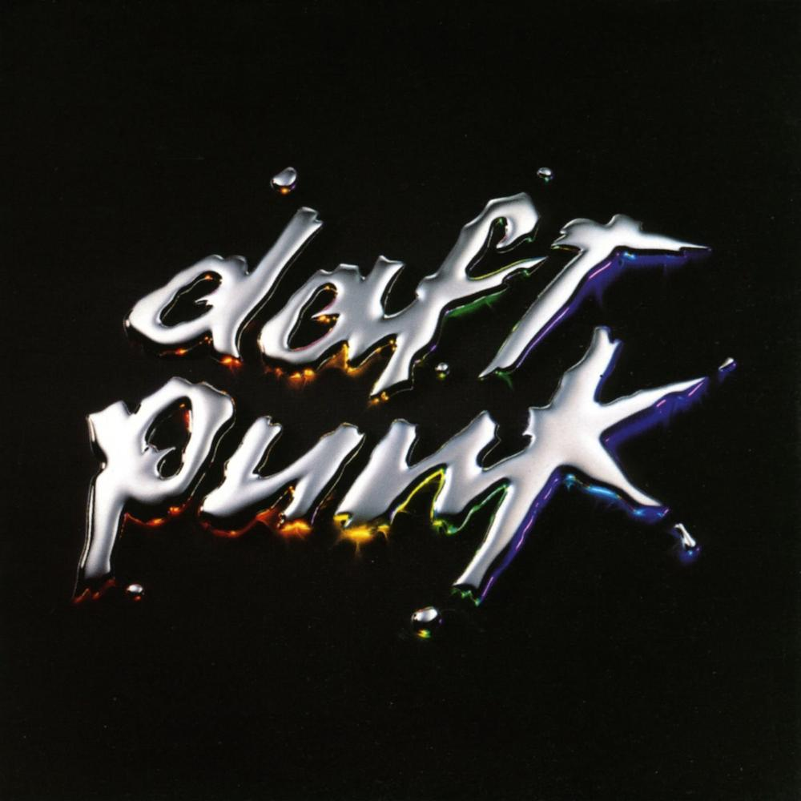
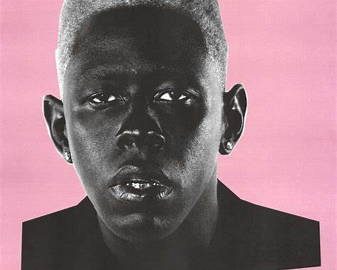
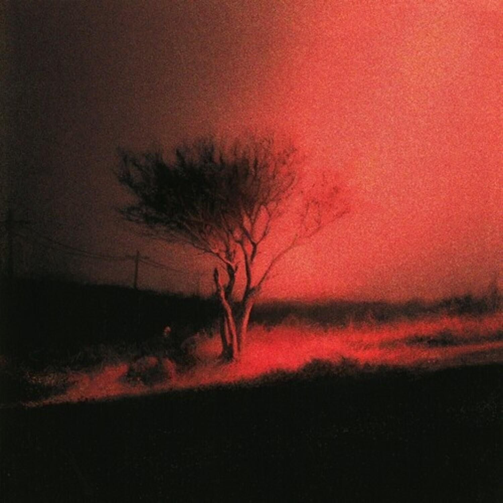
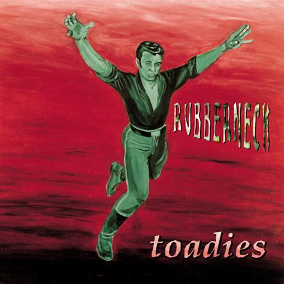
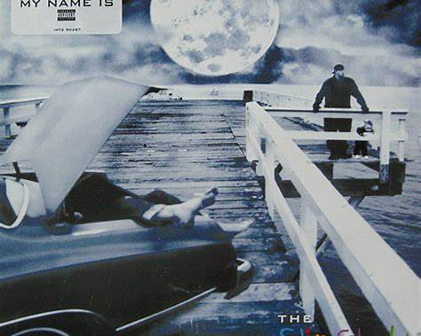
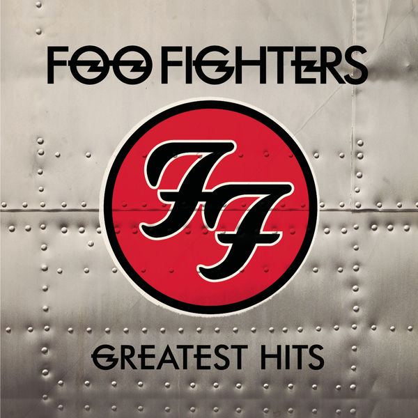

My Top 6 Favorite Albums
This is my collection of pictures of my favorite albums of all time. Each picture is one album that has made music to fill most of my time on this planet. I have listened to each of these albums on repeat for the duration of my adult life. Each album I list is an era in time that explains what I was going through at the time.

Discovery
Album | 2001 | Daft Punk
This album is one of the greatest electronic music albums of all time. Its innovative sound design captovates me in every listen, with melodic hooks that inspire my inner raver. This album is also important to me because of my former roomate. He introduced this album to me in a time of my life where I had to work really hard to make it through college.

Igor
Album | 2019 | Tyler, the Creator
There is no better rapper that I associate with more (other than Slim Shady of course) that has made music that has defined my taste in music over the years, blending amzing lyrics with innovative production. The hard cutting synths in this album are a tribut to Tyler's excellent production skills.

Piss in the Wind
Album | 2023 | JOJI
One of JOJI's new albums that I have collectivley lisened to 50 times all the way through since its release. Every song shows a different perspective that translates to deep emotional resonance for me. Around the time the album came out, I was going through some rough emotions that this album helped me work through. He has been my favorite artist for making every breakupp that much more bearable.

Rubberneck
Album | 1994 | Toadies
With a raw sound that defined my parents college years, this album has always held a special place in my heart. The gritty guitar riffs and intense vocals capture the essence of the 90s grunge rock scene, making it a timeless classic for me and my family. I have since been to 3 of their concerts with my parents. I have never listened to an album more than this one, making them my top artist on spotify for the past 3 years.

Slim Shady LP
Album | 1999 | Eminem
The slim shady LP is my favorite rap album of all time. There is no other artist that has inspired a part of me that I keep hidden. The emotional tones of this album always spark an interesting feeling deep in my gut with every close listen. All through middleschool I was forced to listenm to this and others in his discography. The result it had was a deep knowledge of every lyric Slim raps throughout the album.

Foo Fighters greatest hits
Album | 2009 | Foo Fighters
After listening to Nirvanas discography, I always wated more of that sound. Foo Fighters provided that with endless hours of music that captured the same energy that nivana had. Dave Grohl's drumming and the band's determination to be their own iconic group is evident throughout the album. This album in particular was the first to make me crave physical media. After purchasing this album i discovered there are little booklets in some of the CD cases that contained lyrics and additional artwork, which added to the overall experience of owning the music.